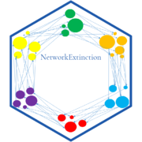

pkgdown 
The goal of NetworkExtinction is to Simulate the extinction of species in the food web and to analyze its cascading effects, as described in Dunne et al. (2002)
Installation
You can install the released version of NetworkExtinction from CRAN with:
install.packages("NetworkExtinction")And the development version from GitHub with:
# install.packages("devtools")
devtools::install_github("derek-corcoran-barrios/NetworkExtinction")Network Encoding
Within NetworkExtinction, ecological networks are recognized either as adjacency matrices or as network objects. Furthermore, NetworkExtinction functions support both binary (whether an interaction is present or not) as well as weighted (importance of an interaction for partners) network specifications. For the demonstration of the package in front of you, we use both types.
To ensure your network representations work well with NetworkExtinction you should ensure that they match the structure of the following objects.
Binary Networks
Binary networks simply denote whether two partners (i.e., nodes) interact with each other (link is present) or not (link is absent). Within a matrix, presence and absence are encoded as 1 and 0, respectively:
set.seed(42)
bin_mat <- matrix(
rbinom(n = 1e2, size = 1, prob = 0.5),
ncol = 10, nrow = 10)
bin_mat
#> [,1] [,2] [,3] [,4] [,5] [,6] [,7] [,8] [,9] [,10]
#> [1,] 1 0 1 1 0 0 1 0 1 1
#> [2,] 1 1 0 1 0 0 1 0 0 0
#> [3,] 0 1 1 0 0 0 1 0 0 0
#> [4,] 1 0 1 1 1 1 1 0 1 1
#> [5,] 1 0 0 0 0 0 1 0 1 1
#> [6,] 1 1 1 1 1 1 0 1 1 1
#> [7,] 1 1 0 0 1 1 0 0 0 0
#> [8,] 0 0 1 0 1 0 1 0 0 1
#> [9,] 1 0 0 1 1 0 1 1 0 1
#> [10,] 1 1 1 1 1 1 0 0 0 1To express this network matrix as a network object, simply run:
library(network)
bin_net <- as.network(bin_mat)
summary(bin_net)
#> Network attributes:
#> vertices = 10
#> directed = TRUE
#> hyper = FALSE
#> loops = FALSE
#> multiple = FALSE
#> bipartite = FALSE
#> total edges = 49
#> missing edges = 0
#> non-missing edges = 49
#> density = 0.5444444
#>
#> Vertex attributes:
#> vertex.names:
#> character valued attribute
#> 10 valid vertex names
#>
#> No edge attributes
#>
#> Network adjacency matrix:
#> 1 2 3 4 5 6 7 8 9 10
#> 1 0 0 1 1 0 0 1 0 1 1
#> 2 1 0 0 1 0 0 1 0 0 0
#> 3 0 1 0 0 0 0 1 0 0 0
#> 4 1 0 1 0 1 1 1 0 1 1
#> 5 1 0 0 0 0 0 1 0 1 1
#> 6 1 1 1 1 1 0 0 1 1 1
#> 7 1 1 0 0 1 1 0 0 0 0
#> 8 0 0 1 0 1 0 1 0 0 1
#> 9 1 0 0 1 1 0 1 1 0 1
#> 10 1 1 1 1 1 1 0 0 0 0Weighted Networks
Weighted networks allow for quantification of relative importance of interactions to interaction partners. Thus, the network matrices of weighted networks are not bound to values of exactly 0 and 1, but rather to ranges:
set.seed(42)
weight_mat <- matrix(
round(
runif(n = 1e2, min = 0, max = 1),
2),
ncol = 10, nrow = 10)
weight_mat
#> [,1] [,2] [,3] [,4] [,5] [,6] [,7] [,8] [,9] [,10]
#> [1,] 0.91 0.46 0.90 0.74 0.38 0.33 0.68 0.04 0.58 0.67
#> [2,] 0.94 0.72 0.14 0.81 0.44 0.35 0.98 0.14 0.16 0.00
#> [3,] 0.29 0.93 0.99 0.39 0.04 0.40 0.76 0.22 0.36 0.21
#> [4,] 0.83 0.26 0.95 0.69 0.97 0.78 0.57 0.48 0.65 0.93
#> [5,] 0.64 0.46 0.08 0.00 0.43 0.04 0.85 0.20 0.78 0.93
#> [6,] 0.52 0.94 0.51 0.83 0.96 0.75 0.19 0.72 0.56 0.73
#> [7,] 0.74 0.98 0.39 0.01 0.89 0.68 0.27 0.01 0.23 0.33
#> [8,] 0.13 0.12 0.91 0.21 0.64 0.17 0.83 0.38 0.09 0.52
#> [9,] 0.66 0.47 0.45 0.91 0.97 0.26 0.69 0.51 0.09 0.74
#> [10,] 0.71 0.56 0.84 0.61 0.62 0.51 0.24 0.00 0.31 0.62To express these matrices as network objects ready for use with NetworkExtinction functions, run the following (this is what NetworkExtinction attempts when it detects a matrix input):
weight_net <- as.network(weight_mat, matrix.type = "adjacency",
ignore.eval = FALSE, names.eval = 'weight')
summary(weight_net)
#> Network attributes:
#> vertices = 10
#> directed = TRUE
#> hyper = FALSE
#> loops = FALSE
#> multiple = FALSE
#> bipartite = FALSE
#> total edges = 87
#> missing edges = 0
#> non-missing edges = 87
#> density = 0.9666667
#>
#> Vertex attributes:
#> vertex.names:
#> character valued attribute
#> 10 valid vertex names
#>
#> Edge attributes:
#>
#> weight:
#> numeric valued attribute
#> attribute summary:
#> Min. 1st Qu. Median Mean 3rd Qu. Max.
#> 0.0100 0.2750 0.5600 0.5361 0.7800 0.9800
#>
#> Network adjacency matrix:
#> 1 2 3 4 5 6 7 8 9 10
#> 1 0 1 1 1 1 1 1 1 1 1
#> 2 1 0 1 1 1 1 1 1 1 0
#> 3 1 1 0 1 1 1 1 1 1 1
#> 4 1 1 1 0 1 1 1 1 1 1
#> 5 1 1 1 0 0 1 1 1 1 1
#> 6 1 1 1 1 1 0 1 1 1 1
#> 7 1 1 1 1 1 1 0 1 1 1
#> 8 1 1 1 1 1 1 1 0 1 1
#> 9 1 1 1 1 1 1 1 1 0 1
#> 10 1 1 1 1 1 1 1 0 1 0NOTE: NetworkExtinction functions do not require network objects and can work just fine with matrix objects.
Extinctions functions
Extinctions from most to less conected species in the network
The Mostconnected() function sorts the species from the most connected node to the least connected node, using total degree. Then, it removes the most connected node in the network, simulating its extinction, and recalculates the topological indexes of the network and counts how many species have indegree 0 (secondary extinction), not considering primary producers. Then, it removes the nodes that were secondarily extinct in the previous step and recalculates which node is the new most connected species. This step is repeated until the number of links in the network is zero (Sole and Montoya 2001; Dunne, Williams, and Martinez 2002; Dunne and Williams 2009).
library(NetworkExtinction)
data("net")
SimulateExtinctions(Network = net, Method = "Mostconnected")The result of this function is a list which contains the dataframe shown in table 1. The first column called Spp indicates the order in which the species were removed simulating an extinction. The column Secondary_extinctions represents the numbers of species that become extinct given that they do not have any food items left in the food web, while the AccSecondaryExtinction column represents the accumulated secondary extinctions. (To plot the results, see function ExtinctionPlot().)
data("More_Connected")
history <- SimulateExtinctions(Network = net, Method = "Mostconnected")
ExtinctionPlot(History = history[[1]], Variable = "AccSecExt")Figure 3. The graph shows the number of accumulated secondary extinctions that occur when removing species from the most to the least connected species
In addition, the list returned by SimulateExtinctions() also contains the final Network that remains after all primary extinctions have been finished:
Extinctions using a customized order
The ExtinctionOrder() function takes a network and extinguishes nodes using a customized order. Then, it calculates the topological network indexes and the secondary extinctions. In our toy network, nodes 1-4 are primary producers while nodes 9 and 10 represent apex predators. Let’s see what happens when we sequentially remove all but the apex predators:
data("net")
SimulateExtinctions(Network = net, Order = 1:8, Method = "Ordered")Already at the removal of node 5, we loose support for all other species in the network.

Figure 4. The graph shows the number of accumulated secondary extinctions that occur when removing species in a custom order.
The results of this function are a dataframe with the topological indexes of the network calculated from each extinction step (Table 2), and a plot that shows the number of accumulated secondary extinctions that occurred with each removed node (Figure 4).
Random extinction
The RandomExtinctions() function generates n random extinction orders, determined by the argument nsim. The first result of this function is a dataframe (table 3). With the SimNum argument, you can control how many of the nodes in the network should be simulated to go extinct for each random extinction order. Here, we choose the same number as we set for our custom order example above.
The column NumExt represents the number of species removed, AccSecondaryExtinction is the average number of secondary extinctions for each species removed, and SdAccSecondaryExtinction is its standard deviation. The second result is a graph (figure 5), where the x axis is the number of species removed and the y axis is the number of accumulated secondary extinctions. The solid line is the average number of secondary extinctions for every simulated primary extinction, and the red area represents the mean ± the standard deviation of the simulations.
data(net)
set.seed(707)
RandomExtinctions(Network= net, nsim= 100, SimNum = 8)
Figure 5. The resulting graph of the RandomExtinctions function
Comparison of Null hypothesis with other extinction histories
The RandomExtinctons() function generates a null hypothesis for us to compare it with either an extinction history generated by the ExtinctionOrder() function or the Mostconnected() function. In order to compare the expected extinctions developed by our null hypothesis with the observed extinction history, we developed the CompareExtinctions() function. The way to use this last function is to first create the extinction history and the null hypothesis, and then the CompareExtinctions() function to compare both extinction histories.
data("net")
Comparison <- CompareExtinctions(Nullmodel = Test, Hypothesis = Order)The result will be a graph (Figue 6) with a dashed line showing the observed extinction history and a solid line showing the expected value of secondary extinctions randomly generated.

Figure 6. The resulting graph of the CompareExtinctions function, where the dashed line shows the observed extinction history, and a solid line shows the expected value of secondary extinctions originated at random
Plotting the extinction histories of a network
The ExtinctionPlot() function takes a NetworkTopology class object and plots the index of interest after every extinction. By default, the function plots the number of accumulated secondary extinctions after every primary extinction (Figure 7), but any of the indexes can be plotted with the function by changing the Variable argument (Figure 8).
data(net)
ExtinctionPlot(History = Order[[1]])
Figure 7. Example of the use of the ExtinctionPlot function showing the accumulated secondary extinctions against number of extinctions
ExtinctionPlot(History = Order[[1]], Variable = "Link_density")Figure 8. Another example of the use of the ExtinctionPlot function showing the number of links per species against number of extinctions
Degree distribution function
The DegreeDistribution() function calculates the cumulative distribution of the number of links that each species in the food network has (Estrada 2007). Then, the observed distribution is fitted to the exponential, and power law models.
The results of this function are shown in figure 9 and table 4. The graph shows the observed degree distribution in a log log scale fitting the three models mentioned above, for this example we use an example dataset of Chilean litoral rocky shores (Kéfi et al. 2015). The table shows the fitted model information ordered by descending AIC, that is, the model in the first row is the most probable distribution, followed by the second an finally the third distribution in this case (Table 3), the Exponential distribution would be the best model, followed by the Power law model.
data("chilean_intertidal")
DegreeDistribution(chilean_intertidal)Figure 9: Fitted vs observed values of the degree distribution. The black line and points show the observed values, the red, green and blue lines show the fitted values for the Exponential, power law and trucated distribution, respectively
| logLik | AIC | BIC | model | Normal.Resid | family |
|---|---|---|---|---|---|
| 83.14753 | -160.29506 | -153.63654 | Exp | No | Exponential |
| 13.38647 | -20.77293 | -14.20397 | Power | No | PowerLaw |
| -27.48222 | 60.96444 | 67.53341 | LogExp | No | Exponential |
| -80.84172 | 167.68343 | 174.25240 | LogPower | No | PowerLaw |
Table 4: Model selection analysis
The main objective of fitting the cumulative distribution of the degrees to those models, is to determine if the vulnerability of the network to the removal of the most connected species is related to their degree distribution. Networks that follow a power law distribution are very vulnerable to the removal of the most connected nodes, while networks that follow exponential degree distribution are less vulnerable to the removal of the most connected nodes (Albert and Barabási 2002; Dunne, Williams, and Martinez 2002; Estrada 2007; Santana et al. 2013).
Inter-Network Dependendancy
By default, the functions in NetworkExtinction assume that, for a secondary extinction to happen, a node needs to loose all connections to its prey (if NetworkType == "Trophic") or all other nodes (if NetworkType == "Mutualistic").
One may also want to assume that species are only capable of sustaining existence given a threshold of remaining interaction strengths. This is implemented with the IS argument, with which one can either set a global node-dependency on interaction strengths or, alternatively, define an IS value for each node in the supplied network.
As a minimal example, let’s consider primary extinctions of two of the producers in our toy network not taking into account any interaction strength loss thresholds:
IS_0 <- SimulateExtinctions(Network = net, Order = 1:2, Method = "Ordered")[[1]]| Spp | S | L | C | Link_density | Modularity | SecExt | Pred_release | Iso_nodes | AccSecExt | NumExt | TotalExt |
|---|---|---|---|---|---|---|---|---|---|---|---|
| 1 | 9 | 9 | 0.1111111 | 1.0000000 | 0.2901235 | 1 | 0 | 0 | 1 | 1 | 2 |
| 2 | 7 | 6 | 0.1224490 | 0.8571429 | 0.0000000 | 1 | 0 | 0 | 2 | 2 | 4 |
Table 5: The resulting dataframe of the basic version of SimulateExtinctions
As you can see, with the base version of SimulateExtinctions(), we obtain two secondary extinctions.
Now, let’s consider that all our species in net need to retain a minimum of 70% of interaction strength to not go extinct (rather than a 0% as is the default):
IS_0.7 <- SimulateExtinctions(Network = net, Order = 1:2, Method = "Ordered", IS = 0.7)[[1]]| Spp | S | L | C | Link_density | Modularity | SecExt | Pred_release | Iso_nodes | AccSecExt | NumExt | TotalExt |
|---|---|---|---|---|---|---|---|---|---|---|---|
| 1 | 9 | 9 | 0.1111111 | 1.0000000 | 0.2901235 | 1 | 1 | 0 | 1 | 1 | 2 |
| 2 | 7 | 6 | 0.1224490 | 0.8571429 | 0.0000000 | 3 | 2 | 0 | 4 | 2 | 6 |
Table 6: The resulting dataframe of the interaction-strength loss version of SimulateExtinctions
As you can see, this drastically changes how many secondary extinctions we estimate.
Rewiring Potential
Ecological networks aren’t static and we should assume that species may shift their connections in response to extinctions of an association/interaction partner. Rewiring processes can be simulated with NetworkExtinction using the Rewiring, RewiringDist, and RewiringProb arguments.
Let’s start with RewiringDist. This should be a matrix that contains information about similarities or rewiring potential of species indexed by columns to those indexed by rows. The package comes with an example data set for this:
data(dist)
dist
#> 1 2 3 4 5 6 7
#> 1 0.00000000 0.4593111 0.10593644 0.30189790 0.4705959 0.1783138 0.4530299
#> 2 0.45931109 0.0000000 0.56524753 0.76120899 0.8902942 0.5980121 0.8727282
#> 3 0.10593644 0.5652475 0.00000000 0.19596146 0.5765323 0.2842503 0.5589664
#> 4 0.30189790 0.7612090 0.19596146 0.00000000 0.7724938 0.4802117 0.7549278
#> 5 0.47059588 0.8902942 0.57653232 0.77249378 0.0000000 0.2922820 0.5669981
#> 6 0.17831383 0.5980121 0.28425027 0.48021173 0.2922820 0.0000000 0.2747161
#> 7 0.45302992 0.8727282 0.55896636 0.75492782 0.5669981 0.2747161 0.0000000
#> 8 0.20346538 0.6627765 0.09752893 0.09843253 0.6740613 0.3817792 0.6564953
#> 9 0.01647744 0.4428337 0.12241388 0.31837534 0.4870733 0.1947913 0.4695074
#> 10 0.54697008 0.4174089 0.44103364 0.63699510 0.5059987 0.7252839 1.0000000
#> 8 9 10
#> 1 0.20346538 0.01647744 0.5469701
#> 2 0.66277647 0.44283365 0.4174089
#> 3 0.09752893 0.12241388 0.4410336
#> 4 0.09843253 0.31837534 0.6369951
#> 5 0.67406125 0.48707331 0.5059987
#> 6 0.38177920 0.19479127 0.7252839
#> 7 0.65649529 0.46950735 1.0000000
#> 8 0.00000000 0.21994281 0.5385626
#> 9 0.21994281 0.00000000 0.5634475
#> 10 0.53856257 0.56344752 0.0000000This is a random distance matrix. For the sake of this example, we assume that these values represent probabilities of rewiring. We have to tweak it a bit to make it useful for our toy example of a trophic network, we do so by setting some of the values to 0:
dist[,1:4] <- 0 # producers don't worry about rewiring
dist[5:10,5:8] <- 0 # intermediate consumders can only rewire to producers
dist[c(1:4, 9:10), 9:10] <- 0 # apex predators can only rewire to intermediate consumers
dist
#> 1 2 3 4 5 6 7 8 9 10
#> 1 0 0 0 0 0.4705959 0.1783138 0.4530299 0.20346538 0.0000000 0.0000000
#> 2 0 0 0 0 0.8902942 0.5980121 0.8727282 0.66277647 0.0000000 0.0000000
#> 3 0 0 0 0 0.5765323 0.2842503 0.5589664 0.09752893 0.0000000 0.0000000
#> 4 0 0 0 0 0.7724938 0.4802117 0.7549278 0.09843253 0.0000000 0.0000000
#> 5 0 0 0 0 0.0000000 0.0000000 0.0000000 0.00000000 0.4870733 0.5059987
#> 6 0 0 0 0 0.0000000 0.0000000 0.0000000 0.00000000 0.1947913 0.7252839
#> 7 0 0 0 0 0.0000000 0.0000000 0.0000000 0.00000000 0.4695074 1.0000000
#> 8 0 0 0 0 0.0000000 0.0000000 0.0000000 0.00000000 0.2199428 0.5385626
#> 9 0 0 0 0 0.0000000 0.0000000 0.0000000 0.00000000 0.0000000 0.0000000
#> 10 0 0 0 0 0.0000000 0.0000000 0.0000000 0.00000000 0.0000000 0.0000000This matrix makes a lot more sense for our purposes. To clarify once more how to read this data: species 8 (column) has a .663 chance of rewiring to species 2 (row).
Next, Rewiring is a function argument that, just like the IS argument can be set globally or individually for each node. It is used to calculate probabilities of rewiring from the data in RewiringDist. Since we assume RewiringDist to already contain probabilities in this example, we simply set RewiringDist to return the data without changing it:
RewiringDist <- function(x){x}Lastly, RewiringProb is called upon to determine whether rewiring can happen among all potential rewiring partners. If no potential rewiring partner comes with a probability higher than this threshold, no rewiring happens. If multiple potential partners meet this threshold, rewiring happens only to the potential partner with the highest probability. Let’s keep the default of 50% here.
Finally, let’s out this all together with the IS example from above. Can we reduce the number of secondary extinctions when allowing for rewiring?
Rewiring <- SimulateExtinctions(Network = net, Order = 1:2, Method = "Ordered", IS = 0.7,
Rewiring = function(x){x}, RewiringDist = dist, RewiringProb = 0.5)[[1]]| Spp | S | L | C | Link_density | Modularity | SecExt | Pred_release | Iso_nodes | AccSecExt | NumExt | TotalExt |
|---|---|---|---|---|---|---|---|---|---|---|---|
| 1 | 9 | 9 | 0.1111111 | 1.000 | 0.2901235 | 0 | 0 | 0 | 0 | 1 | 1 |
| 2 | 8 | 7 | 0.1250000 | 0.875 | 0.3571429 | 1 | 1 | 0 | 1 | 2 | 3 |
Table 7: The resulting dataframe of the rewiring version of SimulateExtinctions
Indeed, this made it so we have one less secondary extinction at the second primary extinction!